Import from Neo4j You can import data from a Neo4j graph database connected to a GraphXR project. The data is modeled according to the current database schema, that is, the categories, relationships, and properties which have been defined so far. There are several ways to import Neo4j data into your project : Pull nodes or edges 25 at a time by selecting a category or relationship in the respective tab in the Project panel and clicking Pull. Pulling data is designed for quick initial exploration. Specific database search or query, combined with the Expand function yields more complete and focused results. Use the search bar to enter a full text keyword search of indexed node properties and import the results from the database. 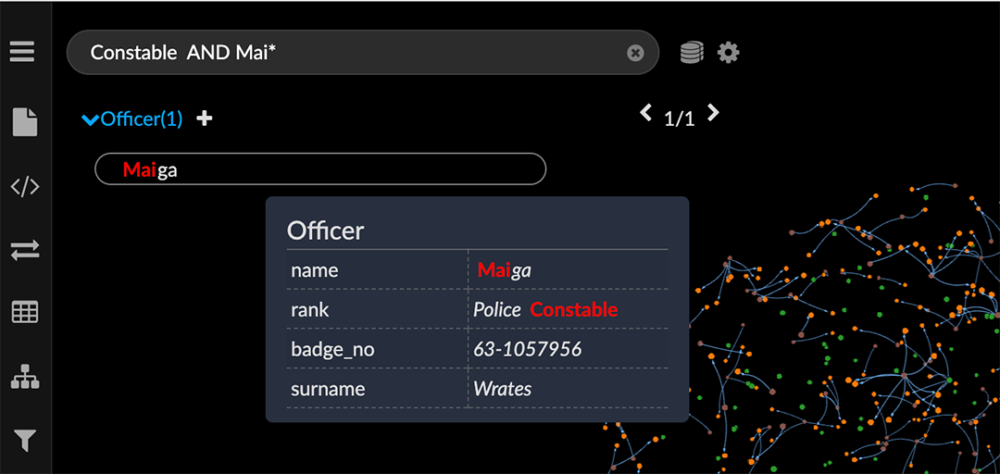 Once some data have been imported, you can use Expand to import additional data connected by specified relationships to nodes that are already the graph. 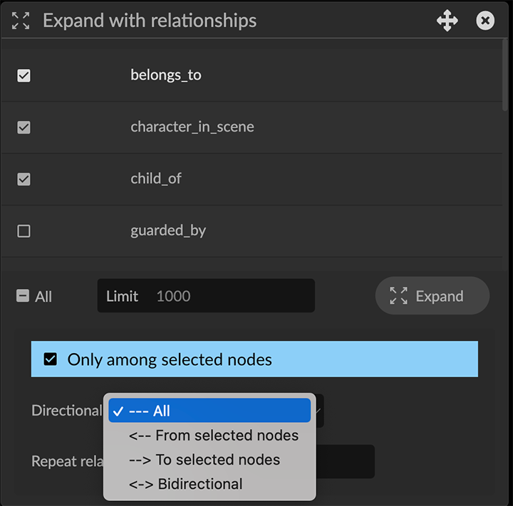 Enter and run a Cypher query in the Cypher tab of the Query panel to import data that match specific graph patterns. 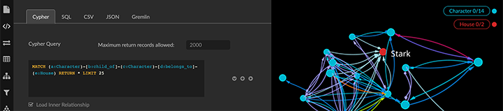 Pull data by Category or Relationship You can pull 25 nodes at a time from a category or relationship that appears in the Category or Relationship tab of the Project panel. To pull data by Category: Click the Project panel icon and Category tab. Click one of the Category items to select it. Click Pull to pull 25 nodes associated with that category, and any edges that connect the nodes. 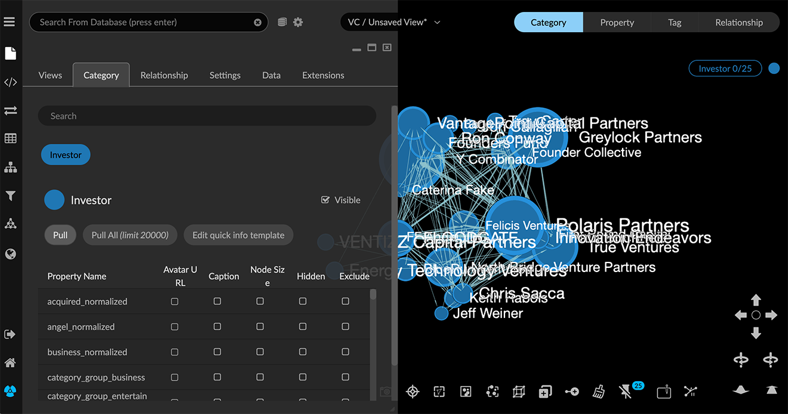 For added samples, click again, as many times as you want. To pull data by relationship: Click the Project panel icon and Relationship tab. Click one of the Relationship items to select it. Click Pull to pull 25 edges associated with that relationship, the connected nodes, and all the other edges connected to those nodes. For added samples, click again, as many times as you want. Import data using full-text keyword search The search field at the top right corner of the graph space provides full-text keyword search of either the data already in the project space or in a connected database. You use the icon at the right of the search field to toggle between Searching from Database or Searching from Graph. 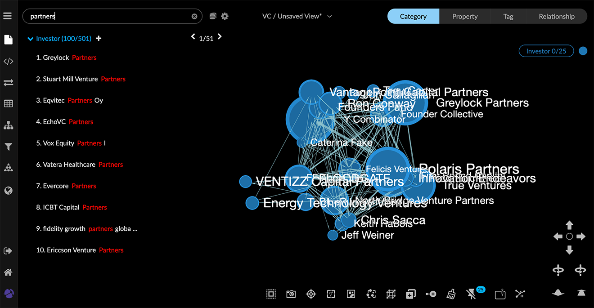 Configure the search index To search a Neo4j database, the search terms must first be indexed in the database. The Config Search Index icon to the right of the database icon opens the configuration dialog. To configure the search index: Click the gear icon next to the search bar to display the the Database Text Search Index Configuration dialog. 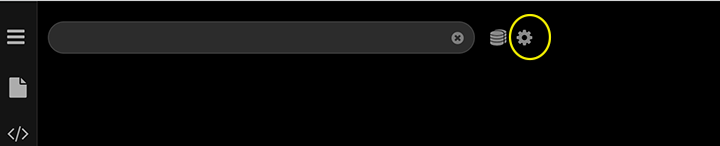 The dialog lists the categories in the connected database and their properties. 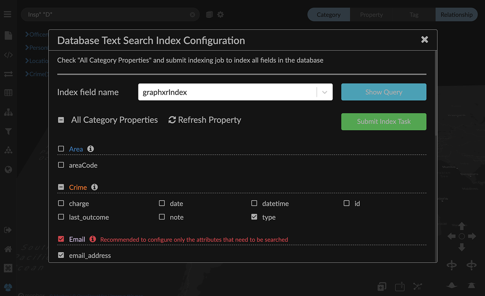 Click Refresh Property to make sure all the properties in the database are listed. Select properties you want to index. You can either Click the All Category Properties checkbox to select all properties. OR Click checkboxes to index selected properties. Click Submit Index Task to index the database search terms. A message displays indicating that the indexing task was successful. Click the X at the upper right to close the dialog. Perform a keyword search To import data using full-text keyword search: Enter one or more search terms in the search bar at the top left corner of the graph space, and press return. You can search for exact indexed property values or partial text strings. Use asterisks to define a search for partial property values (e.g. *Jo** for **Jo**hn, **Jo**nathan, **Jo**sephine). Position asterisks to search for values that start with, end with, or contain the specified string (e.g. **Jo*, *Jo**, or **Jo**). Terms separated by a space use OR logic. Nodes with indexed property values matching any one of the terms will be returned. (e.g. Inspector Sergeant for nodes that include an exact property value of Inspector OR Sergeant). Terms separated by the word AND return only nodes with indexed property values that match all terms. (e.g. Inspector AND D** for nodes with an exact property value of Inspector, and a property value that starts with D (case-insensitive). Search results are listed beneath the search bar for each category. Nodes matching the search keyword appear below the search field listed by category, in alphabetical order. 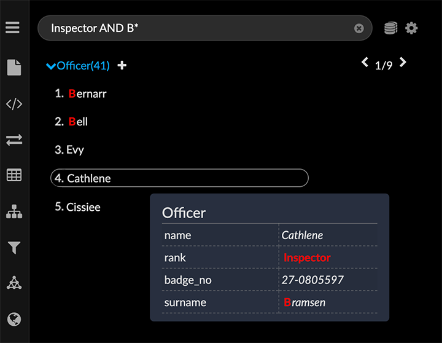 Click the arrow to the left of a category to view individual nodes. If more than five nodes are returned for a category, use the arrow selector at the right to navigate through the list and locate nodes you want to import. 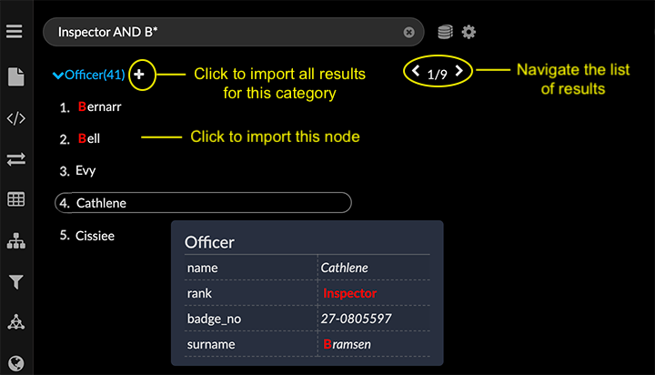 Click a list item to add the node to the graph space. OR Click the + icon to the right of the category label to import all the matching nodes of that category. When you add data, the nodes remain selected in the graph space until you add more data. If you want to immediately remove the data you just imported, press delete while the nodes are still selected. Click the X in the search bar to clear the search and return to the graph space. Searching the graph vs the database Once data are imported, you can click the toggle to the right of the search bar to switch to a search of the graph. Searching in the graph can help quickly focus a search, since matching nodes are actively highlighted as you enter search terms. However, a graph search works differently than a database search in that: Partial text is entered without asterisks AND logic is not recognized. Any space between search terms is still recognized as OR logic. 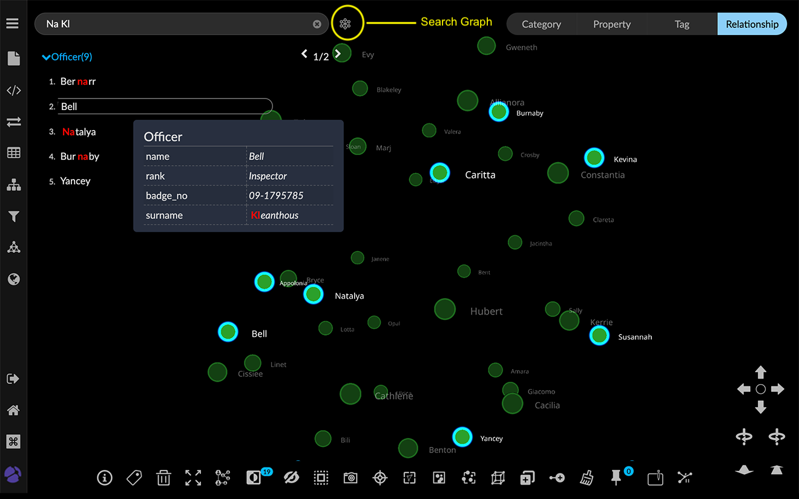 Import data using Expand The Expand icon in the context toolbar menu lets you import additional data from the database which is connected to a selected node or group of nodes already in your project space. To import data using Expand: Select one or more nodes in the graph space, then click Expand in the toolbar or right-click context menu to display the Expand with relationships dialog. 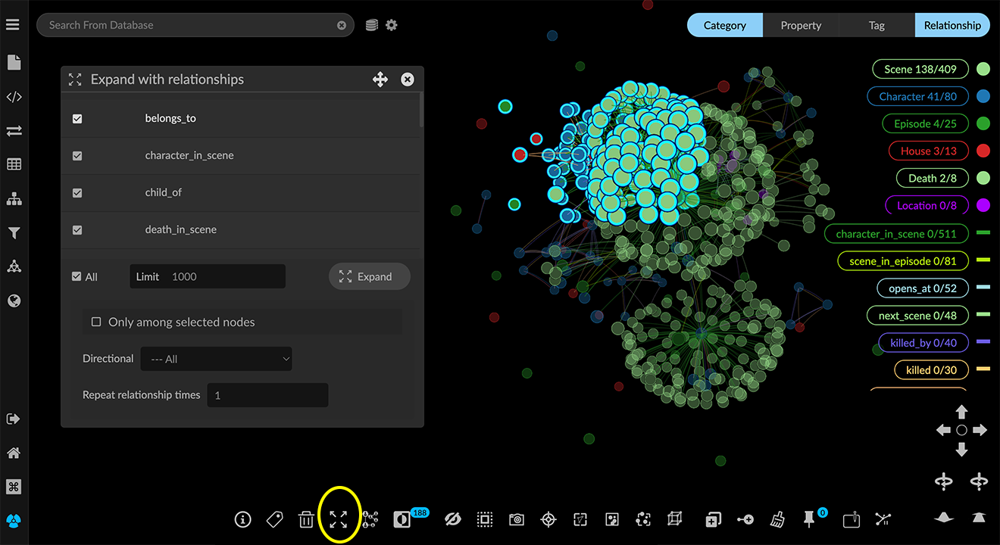 Click the checkbox next to a relationship name to import nodes connected by that relationship as well as the edges. OR Click All to pull nodes and edges that have any relationship to the selected nodes. To limit the number of nodes, enter a number in the Limit field. Set additional options for expanding the graph: Click the Only among selected nodes checkbox to expand relationships only for the selected nodes. Specify Directional relationships using the dropdown menu. You can choose All directions, only nodes connected by relationships From the selected nodes, To the selected nodes, or only those with a Bidirectional relationship. Increase Repeat relationship times, which automatically repeats the expand operation, enabling you to pull in the limit of 1000 edges repeatedly. Click the Expand button. 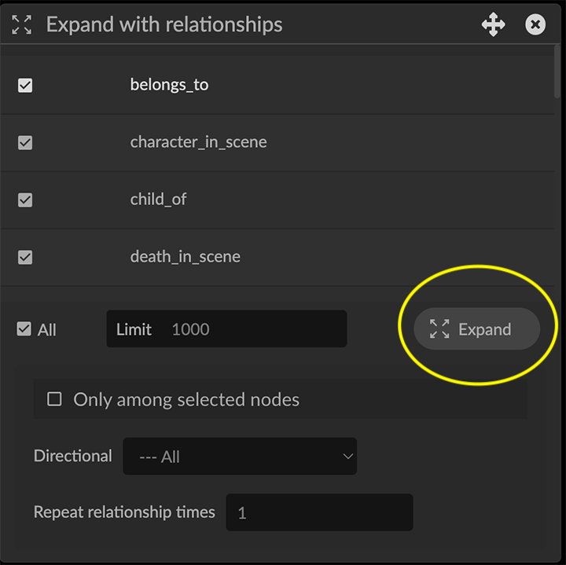 An Expand Next Page dialog indicates the number of items successfully expanded. You can: Click Expand More to pull the next 1000 connected items. This lets you pull in all the data in the database that have the specified connections without needing to return to the Expand with relationships dialog. Click Cancel (or simply click the X at the upper right) to close the dialog. 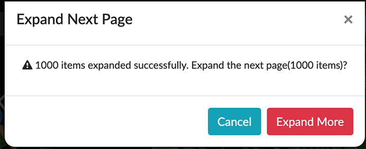 Additional nodes and their relationships are pulled into the graph. In the example below, All relationships were selected, and additional nodes with edges connected to the selected Character and House nodes were pulled from the Neo4j database. Once no additional connected nodes are found, a message displays that all relationships are expanded. 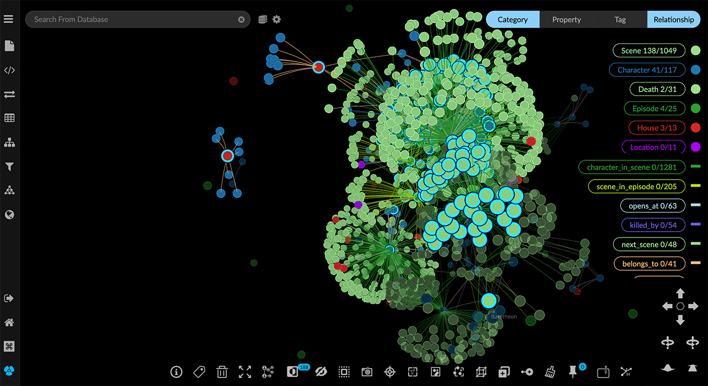 Import using a Cypher query Cypher is a query language for graph data developed by Neo4j which has become a standard for querying graph databases. Cypher can be used to return graph data that match a specified graph pattern, and also to perform complex data selection, transformation, and analytics, as well as graph database maintenance. For information about Cypher, refer to Neo4j’s For Beginners - Cypher Query language and the Neo4j Cypher Manual. In GraphXR’s Query panel and Cypher tab you can: Enter a Cypher query and click the play icon on the right to run it. Save and name a query by clicking the + (plus) icon. The saved query appears on a dropdown menu. Run a saved query by selecting it on the dropdown and clicking the play icon. 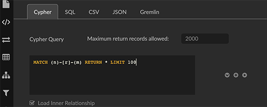 All GraphXR projects include a basic query that pulls 100 connected nodes from the database. This query will MATCH any pattern of nodes n and m connected by any relationship r, and RETURN the first 100 found. The LIMIT is set because this query will likely return a large amount of data. MATCH (n)-[r]-(m) RETURN * LIMIT 100 A more specific, but still basic query for categories and relationships of interest is the following query for Game of Thrones data with the pattern (Characters)-[belongs_to]-(House). This query will MATCH any pattern of Characters and House nodes connected by a belongs_to relationship and RETURN all the matching graph patterns. The variables c, r, and h are used here to simplify further query specifications. MATCH (c:Characters)-[r:belongs_to]-(h:House) RETURN * To import data using a Cypher query: Click to open the Query panel icon. The Cypher tab is displayed. Either enter a Cypher query or select a saved query using the dropdown arrow. Click the Load Inner Relationship checkbox to include the relationships between the nodes pulled by a query. Click the Run Cypher icon to query the connected database. The data appear in the project space as nodes and their connecting edges. 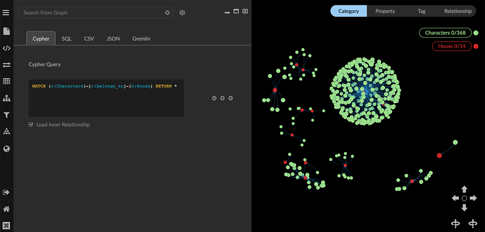 Click the + (plus) icon to save your query. In the Alias Name dialog, enter a name for the query, and click Confirm.